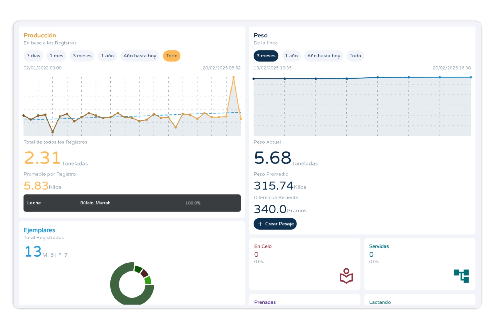
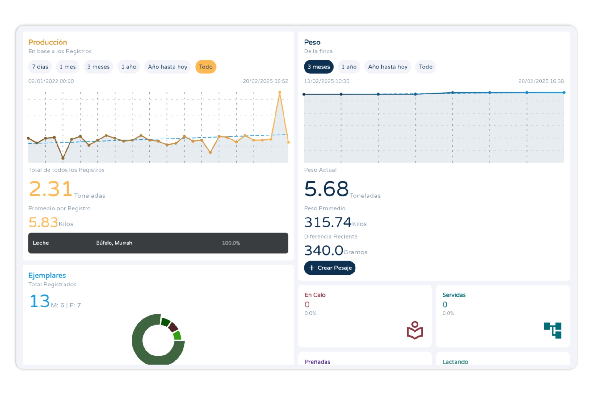

Mi Ganado
La Forma Mas Sencilla de Gestionar Tu Ganado
Mi Ganado es el Sistema de Gestión de Ganado mas Sencillo de usar y que Ofrece Todo el Control al Usuario.
¡Ahora en Tus Manos!


¿Por qué Mi Ganado?
Mi Ganado es el Unico Sistema de Gestion Ganadero que te ofrece un Nivel de Control Rapido y Alto y a la vez Una Interfaz Simple y Sencilla de Entender.
Visualización Clara y Sencilla
Usar Mi Ganado te proporciona Gráficos y árboles genealógicos para un Análisis Completo de Tu Ganado.

Diseño intuitivo
Mi Ganado se enfoca en traerle a los Ganaderos un Diseño Intuitivo y Completo Para disfrutar lo mas pronto de la aplicación.
 

Control Total
Mi Ganado le Ofrece Control Total Sobre cada aspecto de Tu Ganado, ¡Maneje su Producción, Salud, Eventos, Pesaje, Gestaciónes y Mucho Mas! con total Comodidad.

¡Sin Limites!
Mi Ganado es una de las Pocas aplicaciónes que No Limita las Fincas o ejemplares que puedes administrar.

Alcanza al siguiente nivel de control con Mi Gando Pro
Maximiza la eficiencia y rentabilidad de tu ganadería con herramientas avanzadas y reportes detallados.
Descubre todas las ventajas de la versión Pro y lleva tu gestión ganadera al siguiente nivel.
Mi Ganado Pro te ofrece
Versión de Escritorio
Acceso total a la versión de escritorio de Mi Ganado.
Reportes Avanzados
Emite reportes avanzados de tus fincas en un instante.
Sin Publicidad
Usa Mi Ganado sin interrupciones.
☁️
Respaldo en la Nube
Protege tus datos y accede desde cualquier lugar.
Sincronización
Comparte y gestiona información con múltiples usuarios en varios dispositivos.
Y Mucho Más
¿Listo para Manejar tu Ganado con Control y Comodidad?
Descarga Mi Ganado en tu dispositivo favorito y comienza a gestionar tu ganado de manera eficiente.